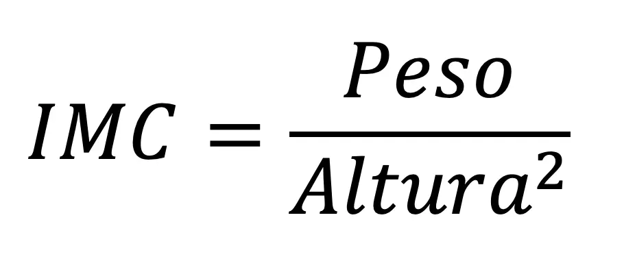

A alimentação saudável é baseada no consumo equilibrado de alimentos que fornecem os nutrientes necessários para o bom funcionamento do organismo. Isso inclui frutas, verduras, legumes, cereais integrais, proteínas magras, gorduras boas e a redução de alimentos ultraprocessados, ricos em açúcar, sal e gorduras trans. Além de promover energia e bem-estar, uma alimentação balanceada ajuda a prevenir doenças, fortalece o sistema imunológico e melhora a qualidade de vida. A hidratação adequada e a moderação no consumo também são pilares importantes.
Melhora na imunidade
Melhora na qualidade de sono
Diminui o risco de doenças crônicas
Melhoria da saúde intestinal
O Índice de Massa Corporal (IMC) é uma das principais ferramentas, adotada inclusive pela Organização Mundial de Saúde (OMS), para calcular o chamado “peso ideal”. Obtido a partir do peso e da altura do indivíduo, o IMC também aponta níveis de magreza e obesidade, que são usados para nortear o trabalho de profissionais de saúde e de educadores físicos.
Para obter o IMC, basta dividir o seu peso (em quilos) pela altura (em metros) elevada ao quadrado (altura x altura). De acordo com o indicador, o peso considerado saudável é aquele situado entre 18,5 e 24,9.
Os marcadores do IMC são:
| IMC | Categoria | Análise |
|---|---|---|
| abaixo de 18.5 | Abaixo do Peso | Procure um médico. Algumas pessoas têm um baixo peso por características do seu organismo e tudo bem. Outras podem estar enfrentando problemas, como a desnutrição. É preciso saber qual é o caso |
| entre 18.5 e 24.9 | Peso Normal | Que bom que você está com o peso normal! E o melhor jeito de continuar assim é mantendo um estilo de vida ativo e uma alimentação equilibrada. |
| entre 25 e 29.9 | Sobrepeso | Ele é, na verdade, uma pré-obesidade e muitas pessoas nessa faixa já apresentam doenças associadas, como diabetes e hipertensão. Importante rever hábitos e buscar ajuda antes de, por uma série de fatores, entrar na faixa da obesidade pra valer. |
| entre 30 e 34.9 | Obesidade | Sinal de alerta! Chegou na hora de se cuidar, mesmo que seus exames sejam normais. Vamos dar início a mudanças hoje! Cuide de sua alimentação. Você precisa iniciar um acompanhamento com nutricionista e/ou endocrinologista. |
| entre 35 e 39.9 | Obesidade Grau II | Mesmo que seus exames aparentem estar normais, é hora de se cuidar, iniciando mudanças no estilo de vida com o acompanhamento próximo de profissionais de saúde. |
| acima de 40 | Obesidade Grau III | Aqui o sinal é vermelho, com forte probabilidade de já existirem doenças muito graves associadas. O tratamento deve ser ainda mais urgente. |